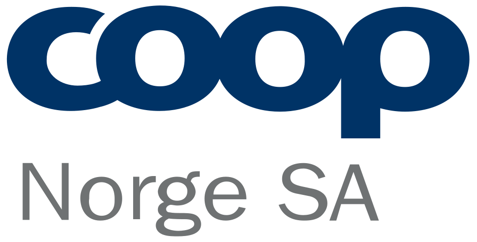

홈 > 브랜드 매거진 > Coop Norge SA
쿱 노르게 Coop Norge SA
쿱 노르게(Coop Norge)는 노르웨이 지역 협동조합들이 공동 소유하는 협동조합 기반 유통 그룹이다.
산업 분야 리테일·커머스 · 공개 등급 자료 기반 · 브랜드 평가 4.1 ★

한눈에 보는 브랜드
코프 노르게(Coop Norge SA)는 노르웨이의 협동조합형 대형 소매 유통 그룹으로, 1906년 6월 28개 소비조합이 도매 연합 NKL(노르웨이협동조합연맹)을 결성하며 출발했다. 약 100여 개 지역 소비조합과 260만 명이 넘는 조합원이 소유하는 구조이며, 본사는 오슬로에 있다.
두 번의 전환점이 오늘의 규모를 만들었다. 하나는 2008년 범북유럽 합작체 코프 노르덴 해체 후 노르웨이 사업권을 회수해 코프 노르게 SA로 재편한 일, 다른 하나는 2015년 ICA 노르게(약 550개 점포) 인수로 단숨에 전국 2위 식료품 유통 그룹으로 올라선 일이다.
연 매출은 한때 약 600억 크로네 규모, 전국 점포는 약 1,200~1,300개에 이른다.
브랜드 관점
가장 결정적인 차별점은 소유 구조 자체다. 이익을 외부 주주가 아니라 구매한 조합원에게 배당으로 환원한다.
2024 회계연도에는 약 14억 크로네(한화로 환산하면 수천억원대) 규모를 조합원에게 돌려주며 모든 구매에 최소 1% 환급을 보장했고, 같은 해 22만여 명이 신규 가입해 그중 약 4할이 30대 이하였다는 점은 협동조합 모델이 젊은 층에도 통한다는 신호다. 전략의 두 번째 축은 멀티체인 포트폴리오다.
초저가 할인형 엑스트라, 근린형 프릭스, 풀라인 메가, 대형 하이퍼마켓 옵스, 소규모 마르케드·마트크로켄까지 단일 협동조합 우산 아래 가격대와 상권을 촘촘히 나눠 점유한다. 노르웨이 식료품 시장은 상위 3사가 9할 이상을 쥔 세계 최고 수준의 집중 시장이며, 코프는 약 3할을 점한 2위다.
한국 독자에게는 농협·아이쿱·한살림으로 이어지는 소비자 협동조합 유통이 전국 단위 대형 체인으로 성장할 때 어떤 지배구조와 환원 설계가 가능한지 보여주는 실물 사례로 읽힌다.
시작과 성장
19세기 후반 북유럽에는 자본주의 유통의 폭리에 맞서 소비자가 직접 출자해 생필품을 공동 구매하는 협동조합 운동이 확산됐다. 노르웨이 첫 협동조합 점포는 1850년대에 문을 열었고, 1906년 6월 28개 조합이 모여 공동 도매 기능을 맡을 NKL을 세웠다.
이듬해 국제협동조합연맹에 가입하며 운동의 일원으로 자리 잡았다. NKL은 유통에 머물지 않고 제조로 영역을 넓혀, 1911년 베르겐 마가린 공장 인수를 시작으로 담배(1914), 커피(1916), 신발·밀가루(1920년대), 초콜릿·전구(1930년대)까지 직접 생산했다.
두 번의 전환점이 현대사를 갈랐다. 첫째, 2001년 스웨덴 KF·덴마크 FDB와 손잡고 범북유럽 합작체 코프 노르덴을 띄웠으나 시너지 부진으로 2008년 해체되며 노르웨이 사업을 코프 노르게 SA로 환원했다.
둘째, 2015년 ICA 노르게의 약 550개 점포를 약 28억 크로네에 인수하며(경쟁당국 조건부 승인) 전국 2위로 도약했다.
브랜드 아이덴티티
코프 노르게의 핵심 가치는 영리 추구가 아니라 조합원·직원·공급자·사회에 대한 가치 창출이다. '코프를 고르면 이득'이라는 메시지가 이를 압축하는데, 배당 환급이라는 실질 혜택으로 그 약속을 뒷받침한다.
비주얼 아이덴티티는 협동조합 운동의 상징색인 녹색을 기반으로 한 'Coop' 워드마크를 축으로 삼고, 각 체인이 동일한 모(母)브랜드 아래 고유 색과 명칭으로 갈라져 시장 세그먼트를 표현한다. 타깃은 가격에 민감한 일상 장보기 가구부터 대형 하이퍼마켓을 찾는 가족 단위까지 폭넓으며, 멤버십을 통해 충성 고객층을 두텁게 묶는다.
브랜드 보이스는 검소하고 실용적이며, 화려한 프리미엄보다 '내 몫이 돌아온다'는 신뢰와 공동체 소속감을 강조한다.
제품과 서비스
여섯 개 식료품 체인 포맷을 운영한다. 초저가 할인형 코프 엑스트라, 근린 슈퍼마켓 코프 프릭스, 풀라인 코프 메가, 대형 하이퍼마켓 코프 옵스, 지역 밀착형 코프 마르케드, 소형 편의형 마트크로켄이다.
여기에 옵스 뷔그·코프 뷔그믹스 같은 건축·DIY 자재 매장도 둔다. 자체 브랜드(PB) 상품군과 멤버십 앱을 운영하며, 오프라인 점포망에 온라인·배달 채널을 결합해 판매 경로를 넓히고 있다.
현재 상태
본사는 노르웨이 오슬로에 있다. 지배구조는 약 100여 개 지역 소비조합이 모(母)조직 코프 노르게 SA를 공동 소유하는 협동조합 형태이며, 그 배후에 260만 명이 넘는 조합원이 있다.
활동 국가는 노르웨이다. 매출 규모는 한때 약 600억 크로네 수준이었고 2024 회계연도 조합원 배당은 약 14억 크로네였다.
정확한 최신 연 매출 세부치는 공시 기준에 따라 변동하므로 일부는 미공개로 둔다.
BI/CI 변천사
자주 묻는 질문
쿱 노르게의 브랜드 아이덴티티는 무엇인가요?
코프 노르게의 핵심 가치는 영리 추구가 아니라 조합원·직원·공급자·사회에 대한 가치 창출이다.
쿱 노르게의 대표 제품은 무엇인가요?
여섯 개 식료품 체인 포맷을 운영한다.
쿱 노르게의 본사는 어디에 있나요?
본사는 노르웨이 오슬로에 있다.
쿱 노르게의 공식 웹사이트는 어디인가요?
쿱 노르게의 공식 웹사이트는 https://coop.no/ 입니다.